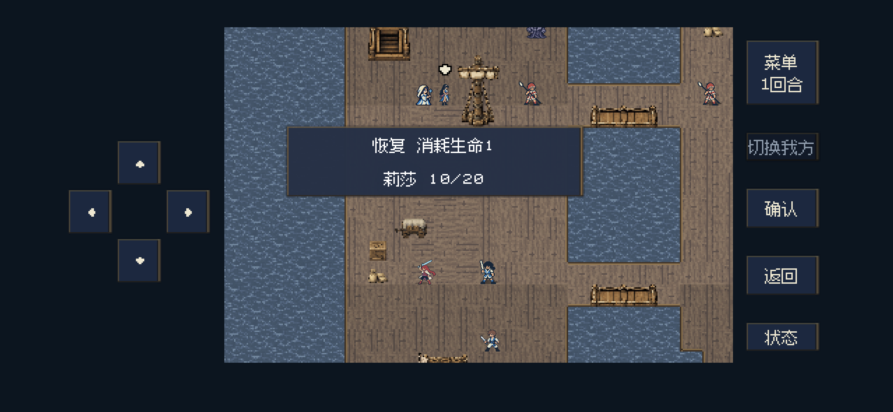
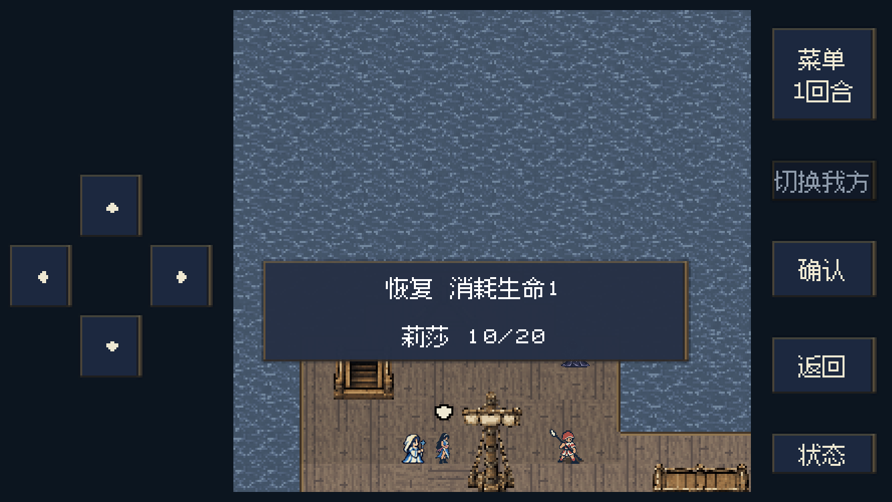
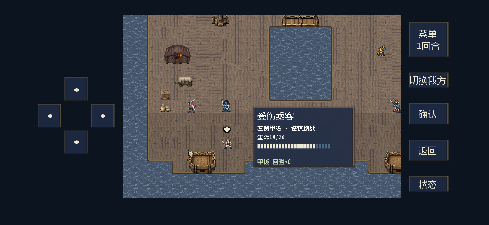
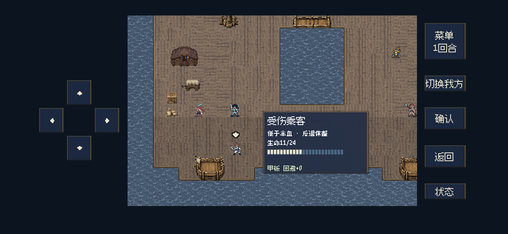
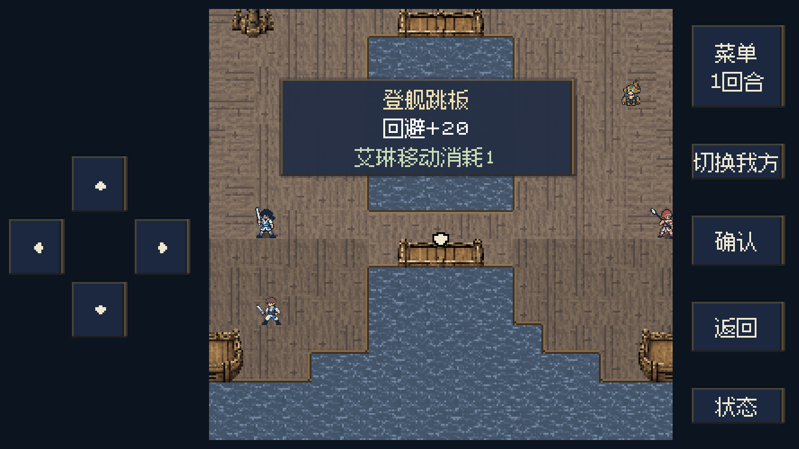
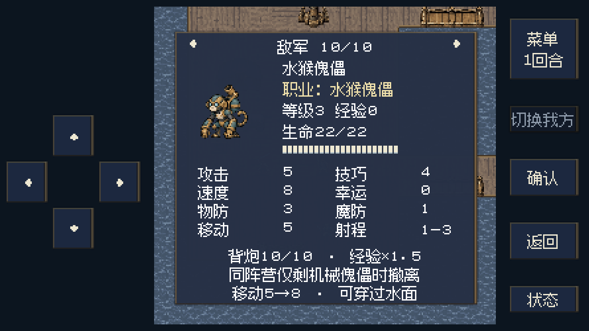
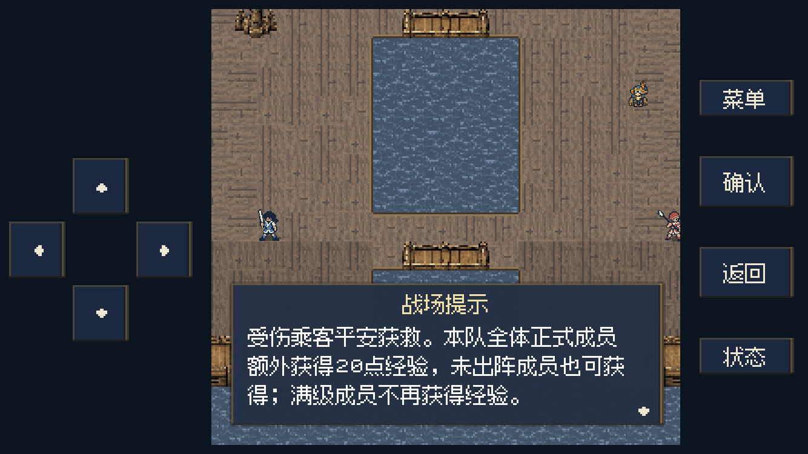

F21 战术反馈
2026-11-04 · 本地代码与后台运行对照。未安装或更新iPhone。
经验调整
以下为同为1级、击败经验价值35敌人的标准比较。只提高指定正式角色的职业系数；伤害经验、职业通关经验与治疗经验使用同一系数。关卡固定训练经验、乘客存活20经验等固定事件奖励不乘倍率；满级不再取得经验，原有等级递减保留。
| 角色 | 原击杀经验 | 现击杀经验 | 判断 |
|---|
| 艾琳 | 18 | 28 | 主角初期系数偏低，5→8 |
| 米蕾 | 35 | 35 | 治疗和击杀系数已充足，保持 |
| 莉莎 | 21 | 28 | 攻击法师系数偏低，6→8 |
| 卡洛 | 25 | 25 | 当前系数7、出手机会充足，保持 |
| 洛德 | 18 | 25 | 重装单位输出机会少，5→7 |
| 罗恩 | 25 | 25 | 弓手系数7且有射程优势，保持 |
| 希雅 | 21 | 25 | 职业系数小幅补足，6→7 |
| 诺娅 | 21 | 28 | 同类法师一并调整，6→8 |
| 赛琳 | 25 | 25 | 兼有治疗收益，保持 |
乘客与跳板
受伤乘客初始19/24生命（80%取整），只在己方左侧甲板内自动移动。生命不少于一半时谨慎协助攻击；低于一半时停止主动攻击并退向后方补给位，仍可自卫反击。存活通关，本队全体正式成员额外获得20经验，含预备与濒死成员，满级除外；升级按普通成长结算，不复活濒死者。阵亡只失去此笔奖励，不新增主线失败条件。
上下两条跳板全区域回避＋20，站上即生效。取消无效“检查”入口，保留原有跳板图像。战前船医指向药车右侧的补给位；任务目标说明与一次性战场提示同步说明乘客规则及收益。
运行对照
恢复与传送提示根据当前目标动态避让，不覆盖目标角色或箭头。水猴规则保持，详情补充已有撤离条件、移动5→8与穿水能力。

恢复目标靠近上方：提示框移至下方，保留角色与完整箭头
窄屏目标靠近下方：提示框避让目标
乘客19/24生命，在己方甲板谨慎助战
低于半血：提示后退休整
保留两块跳板原图，取消交互，踏上回避＋20
水猴详情：仅剩机械傀儡撤离，移动5→8，可穿水
乘客存活奖励：本队全体正式成员20经验验证范围
无窗口规则检查345项，后台宽窄屏检查731项，断言全部通过；机械傀儡既有检查59项、M15回溯既有检查110项通过。
覆盖实际交锋经验、乘客真实攻击及低血量后退、左右甲板边界、存活／阵亡奖励差异、预备与濒死升级不复活、防重复结算、存读档、回溯、旧跳板记录兼容、旧地图陆地／水面不改变、文本安全区与防重叠。截图用固定布置检查界面，非完整关卡游玩记录；未做完整战役回归或真机验证。
进行中的旧存档保留乘客当前生命、位置和已行动状态；新部署或重试采用19/24初始生命。已结算通关不追发奖励。
逻辑明细 · 后台界面明细 · 尺寸、字节数与源码校验 · 乘客／跳板规则 · 经验公式